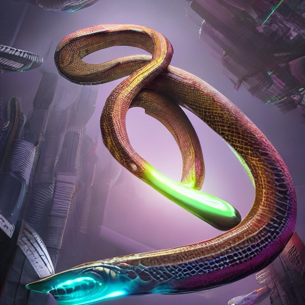

Fauna

Description: The Leviathan Serpent is a colossal, serpentine predator with scales that shimmer like liquid silver. Its elongated body stretches for hundreds of meters, making it one of the largest creatures in Aquaria's oceans. They are solitary and enigmatic, the Leviathan Serpent prowls the depths in search of prey, its movements almost ghost-like despite its immense size. It is known to emit low-frequency pulses to communicate and navigate. They roam the deepest trenches and abyssal plains of Aquaria, where they hunt with unrivaled stealth and precision. They are carnivorous, preying on large marine mammals, including Sapphire Swimmers, and other colossal creatures that inhabit the ocean depths. Adult Leviathan Serpents have no natural predators due to their size and formidable abilities. They are estimated to live for several hundred standard Aquarian years, although exact lifespan remains a mystery.
Planet: Aquaria